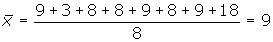
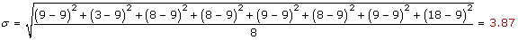
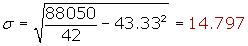
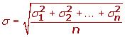
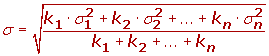

Desviación típica
Desviación típica
La desviación típica es la raíz cuadrada de la varianza.
Es decir, la raíz cuadrada de la media de los cuadrados de las puntuaciones de desviación.
La desviación típica se representa por σ.


Desviación típica para datos agrupados


Para simplificar el cálculo vamos o utilizar las siguientes expresiones que son equivalentes a las anteriores.


Ejercicios de desviación típica
Calcular la desviación típica de la distribución:
9, 3, 8, 8, 9, 8, 9, 18


Calcular la desviación típica de la distribución de la tabla:
| xi | fi | xi · fi | xi2 · fi | |
|---|---|---|---|---|
| [10, 20) | 15 | 1 | 15 | 225 |
| [20, 30) | 25 | 8 | 200 | 5000 |
| [30,40) | 35 | 10 | 350 | 12 250 |
| [40, 50) | 45 | 9 | 405 | 18 225 |
| [50, 60) | 55 | 8 | 440 | 24 200 |
| [60,70) | 65 | 4 | 260 | 16 900 |
| [70, 80) | 75 | 2 | 150 | 11 250 |
| 42 | 1 820 | 88 050 |


Propiedades de la desviación típica
1 La desviación típica será siempre un valor positivo o cero, en el caso de que las puntuaciones sean iguales.
2 Si a todos los valores de la variable se les suma un número la desviación típica no varía.
3 Si todos los valores de la variable se multiplican por un número la desviación típica queda multiplicada por dicho número.
4 Si tenemos varias distribuciones con la misma media y conocemos sus respectivas desviaciones típicas se puede calcular la desviación típica total.
Si todas las muestras tienen el mismo tamaño:

Si las muestras tienen distinto tamaño:

Observaciones sobre la desviación típica
1 La desviación típica, al igual que la media y la varianza, es un índice muy sensible a las puntuaciones extremas.
2 En los casos que no se pueda hallar la media tampoco será posible hallar la desviación típica.
3 Cuanta más pequeña sea la desviación típica mayor será la concentración de datos alrededor de la media.